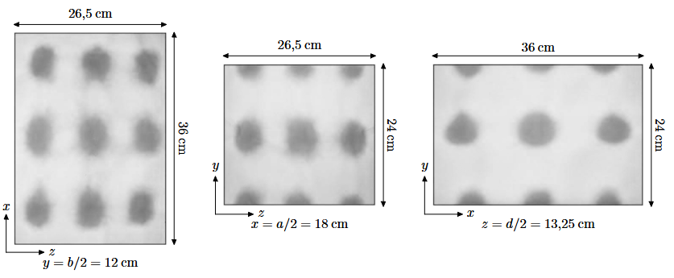

Earlier today, while I was microwaving my lasagnas, a memory came back to me. It wasn't about food at all but about physics. See two years ago when I took the French competitive exam to enter CentraleSupélec I had to take multiple exams of physics, and one of them (CCS Physics-Chemistry 2023) was about Electromagnetism and briefly covered the working principles of microwaves. Remembering this particular subject that I found very interesting I decided to share it to answer the following question: why do microwaves' turntables turn ?
Microwaves are very simple in principle: use microwaves (big surprise) to excite molecules which results in heat. In practice you don't just want to emit microwaves arbitrarily, it would be highly inefficient as much of the energy would be dissipated (and maybe a bit dangerous). So what you want to do is to circumscribe the waves inside of the microwave, and that is really easy: simply make the inside of the microwave out of metal so that the microwaves are reflected and stay inside. With that comes a problem: the waves interfere with one another and their reflection which results in destructive interferences. Matter of fact, the resulting electric field looks like this:
$$\begin{cases} E_x(x,y,z,t) = E_1 \cos(k_x x)\,\sin(k_y y)\,\sin(k_z z)\,\cos(\omega t) \\ E_y(x,y,z,t) = E_2 \sin(k_x x)\,\cos(k_y y)\,\sin(k_z z)\,\cos(\omega t) \\ E_z(x,y,z,t) = E_3 \sin(k_x x)\,\sin(k_y y)\,\cos(k_z z)\,\cos(\omega t) \end{cases}$$
We can clearly see that at some points the field will be of higher norm. These are called antinodes, while the places where the field cancels out are the nodes. In simpler terms, this means that some areas inside the microwave cavity will receive a lot of electromagnetic energy (and therefore heat food strongly), while other areas will almost receive none. If you were to place a plate of food perfectly still in the oven, some parts would come out burning hot while others would still be cold. You have probably experienced this before if you microwaved something without the turntable spinning—one bite is lava, the next one is ice.
Matter of fact, here is a piece of paper soaked with cobalt chloride, which reveals the waves when put inside of the microwave (illustration from the physics exam referenced earlier):
The turntable is therefore not just some quirky design choice: it is a very practical solution to average out these hot and cold spots by constantly moving the food through different regions of the standing wave pattern. In doing so, every part of the food gets its turn to pass through the “hot zones,” and the result is a much more uniform heating. Of course, it’s not perfect (which is why instructions often say “stir halfway through” or “let stand for two minutes”), but it is a clever way to work around the unavoidable physics of wave interference.
I like to think back on this small detail whenever I use a microwave. Something as ordinary as warming up lunch is actually built on fascinating principles of electromagnetism, wave interference, and clever engineering. The next time you hear the hum of a microwave and see the plate spinning slowly inside, you can remember that it’s not just turning for fun—it’s turning because physics says it has to.
Now you know why microwaves' turntables turn.